── Attaching core tidyverse packages ──── tidyverse 2.0.0 ──
✔ dplyr 1.1.1 ✔ readr 2.1.4
✔ forcats 1.0.0 ✔ stringr 1.5.0
✔ ggplot2 3.4.2 ✔ tibble 3.2.1
✔ lubridate 1.9.2 ✔ tidyr 1.3.0
✔ purrr 1.0.1
── Conflicts ────────────────────── tidyverse_conflicts() ──
✖ dplyr::filter() masks stats::filter()
✖ dplyr::lag() masks stats::lag()
ℹ Use the conflicted package (<http://conflicted.r-lib.org/>) to force all conflicts to become errors
Attaching package: 'janitor'
The following objects are masked from 'package:stats':
chisq.test, fisher.test
Attaching package: 'xfun'
The following objects are masked from 'package:fs':
dir_create, dir_exists, file_exists
The following objects are masked from 'package:base':
attr, isFALSE
Quarto, the Next-Generation Tool for Reproducible Reporting
In mid-2022, the team at Posit (the company that makes the RStudio editor, the tidyverse, and many other tools to support R programmers) made an announcement: they had developed a new tool called Quarto, which they described as the next-generation version of R Markdown. The Posit team explained a few of the reasons why they felt the need to develop a new tool for reproducible reporting:
More consistent syntax: As you’ve seen in this book, the syntax used to create different outputs with R Markdown varies. For example, the distill package has layout options that don’t work in xaringan. And xaringan uses three dashes to indicate new slides, while three dashes in other output formats would create a horizontal line. With Quarto, the idea is to make the syntax used to create different outputs more consistent.
Support for multiple languages: While R Markdown does work with languages such as Python, having the word R in the name was off-putting for non-R users. Creating a tool like Quarto was Posit’s “attempt to bring R Markdown to everyone.” Quarto makes it straightforward for users to include code from multiple languages in a single document.
Support for multiple code editors: R Markdown is designed to work in the RStudio IDE. With the move to support additional languages, it was important to support the code editors that users of those languages prefer. Quarto works in RStudio as well as editors such as VS Code and JupyterLab.
While the benefits of Quarto are clearest for non-R users, there are also many reasons why R users may want to use Quarto. I’ll focus in this chapter on the benefits for R users who use RStudio. I’ll begin by explaining how to set up and use Quarto before going over some of the most important differences between Quarto and R Markdown. I’ll then demonstrate how to make each of the products we made in previous chapters with R Markdown using Quarto. Parameterized reporting, presentations, and websites are all things that Quarto can do, and this chapter will show you how.
Getting Started with Quarto
To get started with Quarto, we first need to make sure it is installed. The good news is that newer versions of RStudio (2022.07.1 and later) come with Quarto installed. To check your RStudio version, click RStudio in the top menu bar, then click About RStudio. If you have an older version of RStudio, update it now (repeat the steps outline in Chapter @ref(#howto-chapter) on downloading RStudio) and Quarto will be installed for you.
Once you have Quarto installed, you’re ready to work with it. You can create a Quarto document by clicking File > New File > Quarto Document. You’ll see a menu, shown in Figure @ref(fig:new-quarto-doc), that looks like what you saw when creating an R Markdown document.
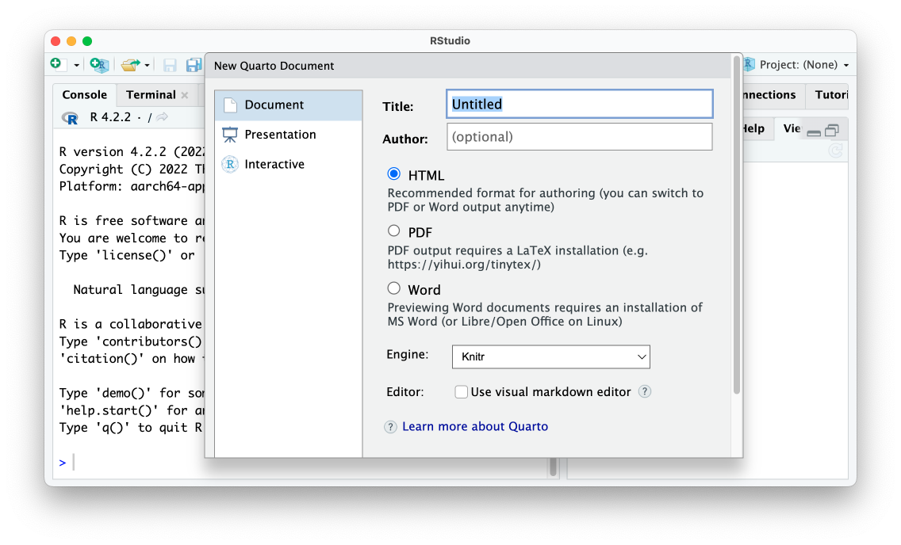
The RStudio menu for creating a new Quarto document
I’ll give my document a title and choose HTML as my output format. The engine option allows users to select a different way to render documents. I’ll keep the default of Knitr, which is the same tool that R Markdown uses to render documents. I’ll keep the Use visual markdown editor unchecked (this option allows you to use an interface that looks more like Microsoft Word, but I’ve found it finicky). The Quarto document that is created has default content, just like R Markdown documents.
---title: "My Report"format: html---## QuartoQuarto enables you to weave together content and executable code into a finished document. To learn more about Quarto see <https://quarto.org>.## Running CodeWhen you click the **Render** button a document will be generated that includes both content and the output of embedded code. You can embed code like this:```{r}1+1```You can add options to executable code like this ```{r}#| echo: false2*2```The `echo: false` option disables the printing of code (only output is displayed).
There are some differences between R Markdown and Quarto and many things in common. Let’s explore them.
Comparing R Markdown and Quarto
Looking through our newly created Quarto document, you can see how similar Quarto and R Markdown are overall. Both have the same basic structure: YAML metadata, followed by a combination of markdown text and code chunks. Despite the similarities, there are some differences. In R Markdown, we would have created an HTML document with this YAML.
---
title: "My Report"
output: html_document
---
With Quarto, output is replaced with format and we write html instead of html_document.
---
title: "My Report"
format: html
---
A second difference between R Markdown and Quarto is that the setup code chunk seen in the former does not exist in the latter. Recall from Chapter @ref(rmarkdown-chapter) that the setup code chunk sets default options on things like whether we show code, charts and tables, and other elements in the rendered versions of our documents. With Quarto, these options are set in the YAML. For example, if we want to hide code as well as all warnings and messages from our rendered document, we add them under execute in our YAML as follows (Quarto also allows you to write true and false in lower case):
---
title: "My Report"
format: html
execute:
echo: false
warning: false
message: false
---
In R Markdown, if we want to override options at the individual code chunk level, we do it by adding them within the curly brackets that start a code chunk. The code chunk below would show both the code 2 * 2 as well as the output (4).
```{r echo = TRUE}2*2```
With Quarto, we use a slightly different syntax to set individual chunk-level options. You can see below how the chunk option is not set within the curly brackets, but instead in the code chunk itself. We use the text #| (known as the hash pipe) at the start of a line to indicate that we are setting options.
```{r}#| echo: false2*2```
A final difference you’re likely to see if you switch from R Markdown to Quarto is that option names that consist of two words are separated by a dash rather than a period. R Markdown, for example, uses the code chunk option fig.height to determine the height of plots.
Helpfully for those of us coming from R Markdown, fig.height and similar options with periods in them will continue to work if you forget to make the switch. A list of all code chunk options can be found on the Quarto website: https://quarto.org/docs/reference/cells/cells-knitr.html.
Rendering your Quarto document to HTML (or any other format) follows the same process as R Markdown. While you use the Knit button to render an R Markdown document, with Quarto the button is called Render. Figure @ref(fig:render-button) shows the Render button.
The Render button
Clicking the Render button will turn the Quarto document into an HTML file, Word document, or any other output format you select.
As you’ve seen, the differences between R Markdown and Quarto are mostly around syntax. All of the general concepts you learned about generating reports with the single-tool workflow described in Chapter @ref(rmarkdown-chapter) apply to Quarto as well.
Making Different Types of Outputs with Quarto
Now that you’ve learned how Quarto works to create a simple document, let’s make a few different things with it. We’ll go through the outputs that you’ve learned to make in Chapters @ref(parameterized-reporting-chapter), @ref(presentations-chapter), and @ref(websites-chapter).
Parameterized Reporting with Quarto
Let’s start with parameterized reporting. The process of making parameterized reports with Quarto is nearly identical to how it’s done with R Markdown. Below, I’ve taken the R Markdown document used to make the Urban Institute COVID Report in Chapter @ref(parameterized-reporting-chapter) and adapted it for Quarto. I did so by copying the .Rmd file and changing its extension to .qmd. From there, I made the following changes:
Switched output: html_document to format: html in the YAML.
Removed the setup code chunk and put the options that were there in the YAML.
Switched the fig.height option in the last code chunk to fig-height and used the hash pipe.
---title: "Urban Institute COVID Report"format: htmlparams: state: "Alabama"execute: echo: false warning: false message: false---```{r}library(tidyverse)library(urbnthemes)library(here)library(scales)```# `r params$state````{r}cases <-tibble(state.name) %>%rbind(state.name ="District of Columbia") %>%left_join(read_csv("https://data.rwithoutstatistics.com/united_states_covid19_cases_deaths_and_testing_by_state.csv", skip =2),by =c("state.name"="State/Territory")) %>%select(total_cases =`Total Cases`, state.name,cases_per_100000 =`Case Rate per 100000`) %>%mutate(cases_per_100000 =parse_number(cases_per_100000)) %>%mutate(case_rank =rank(-cases_per_100000, ties.method ="min"))``````{r}state_text <-if_else(params$state =="District of Columbia", str_glue("the District of Columbia"), str_glue("state of {params$state}"))state_cases_per_100000 <- cases %>%filter(state.name == params$state) %>%pull(cases_per_100000) %>%comma()state_cases_rank <- cases %>%filter(state.name == params$state) %>%pull(case_rank)```In `r state_text`, there were `r state_cases_per_100000` cases per 100,000 people in the last seven days. This puts `r params$state` at number `r state_cases_rank` of 50 states and the District of Columbia. ```{r}#| fig-height: 8set_urbn_defaults(style ="print")cases %>%mutate(highlight_state =if_else(state.name == params$state, "Y", "N")) %>%mutate(state.name =fct_reorder(state.name, cases_per_100000)) %>%ggplot(aes(x = cases_per_100000,y = state.name,fill = highlight_state)) +geom_col() +scale_x_continuous(labels =comma_format()) +theme(legend.position ="none") +labs(y =NULL,x ="Cases per 100,000")```
Despite these small differences, the rendered report looks almost exactly the same as the one we produced in Chapter @ref(parameterized-reporting-chapter). Also nearly identical is the process of creating one report for each state. We can take the render.R script file we used to make parameterized reports in Chapter @ref(parameterized-reporting-chapter) and, with a few small tweaks, it works. In the updated render.R file below, I made the following tweaks:
Loaded the quarto package instead of the rmarkdown package.
Made the input file urban-covid-budget-report.qmd instead of urban-covid-budget-report.Rmd.
In the reports tibble I created, used execute_params instead of params.
On the last line, used the quarto_render() function instead of the render() function from the markdown package.
# Load packageslibrary(tidyverse)library(quarto)# Create a vector of all states and the District of Columbiastate <-tibble(state.name) %>%rbind("District of Columbia") %>%pull(state.name)# Create a tibble with information on the:# input R Markdown document# output HTML file# parameters needed to knit the documentreports <-tibble(input ="urban-covid-budget-report.qmd",output_file =str_glue("{state}.html"),execute_params =map(state, ~list(state = .)))# Generate all of our reportsreports %>%pwalk(quarto_render)
Just as in Chapter @ref(parameterized-reporting-chapter), running this code will produce one report for each state.
Presentations
Quarto can also produce presentations like those we made in Chapter @ref(presentations-chapter). Again, the process is nearly identical to how we made slides with the xaringan package. To make a presentation with Quarto, click on File > New File > Quarto Presentation. You’ll want to choose Reveal JS to make your slides and leave the Engine and Editor options untouched, as seen in Figure @ref(fig:quarto-new-presentation).
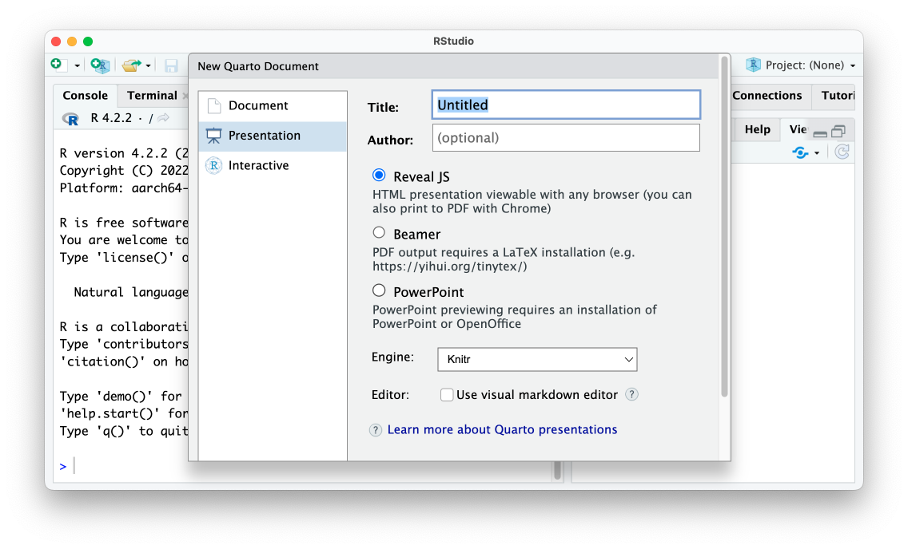
The RStudio menu to make a new Quarto presentation
The slides we’ll make use the reveal.js javascript library under the hood. Making slides in this format is the Quarto approach that is most similar to making slides with xaringan. Below I’ve taken the code used to make a presentation with xaringan in Chapter @ref(presentations-chapter) and made a few updates to make it work with Quarto.
---title: "Penguins Report"author: "David Keyes"format: revealjsexecute: echo: false warning: false message: false---# Introduction```{r}library(tidyverse)``````{r}penguins <-read_csv("https://raw.githubusercontent.com/rfortherestofus/r-without-statistics/main/data/penguins-2008.csv")```We are writing a report about the **Palmer Penguins**. These penguins are *really* amazing. There are three species:- Adelie- Gentoo- Chinstrap## Bill LengthWe can make a histogram to see the distribution of bill lengths.```{r}penguins %>%ggplot(aes(x = bill_length_mm)) +geom_histogram() +theme_minimal()``````{r}average_bill_length <- penguins %>%summarize(avg_bill_length =mean(bill_length_mm,na.rm =TRUE)) %>%pull(avg_bill_length)```The chart shows the distribution of bill lengths. The average bill length is `r average_bill_length` millimeters.
When we render this, we get an HTML file with our slides, seen in Figure @ref(fig:quarto-slides) below.
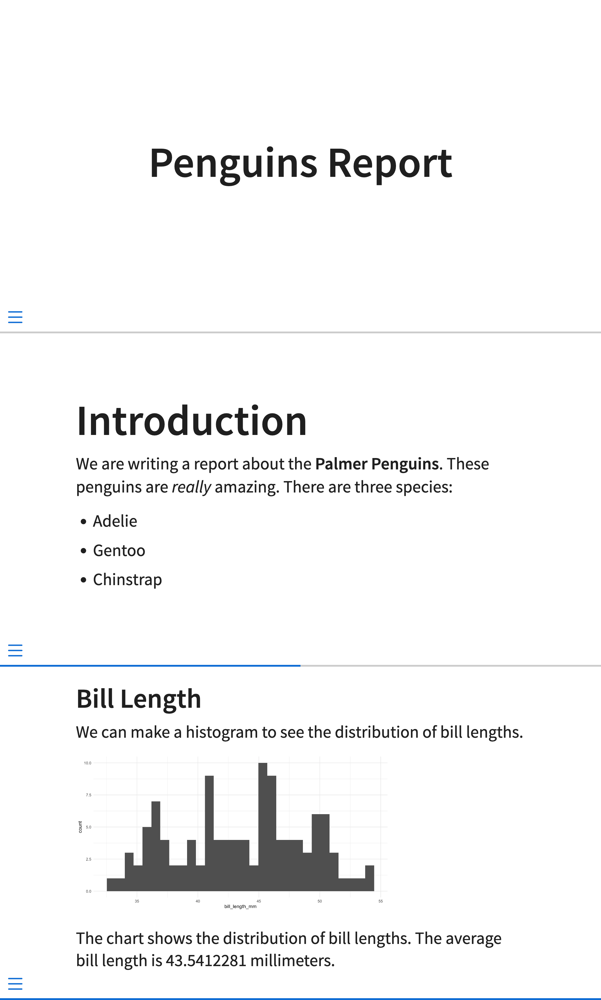
Slides made with Quarto
Overall, the output looks similar to the default xaringan slides we made. However, remember how we had to manually add three dashes to make slides with xaringan? With Quarto, any first- or second-level headers make new slides so I was able to remove these (though you can use three dashes to manually add slide breaks).
Quarto slides also make it possible to incrementally reveal content. Bulleted and numbered lists can be made to incrementally reveal by default by adjusting the YAML. See here how I add incremental: true to the YAML.
When I do this, the content in all lists in my presentation will be revealed one item at a time. You can also set just some lists to incrementally reveal using this format:
::: {.incremental}- Adelie- Gentoo- Chinstrap:::
This pattern using ::: to start and end a section creates a section in the resulting HTML file known as a <div>. The HTML <div> tag allows you to define properties within that section. In the code above, adding {.incremental} sets a custom CSS class that makes the list reveal incrementally.
We see a similar pattern when creating columns in Quarto slides. Let’s say we want to create a slide with content in two columns, as in Figure @ref(fig:quarto-slides-two-columns).
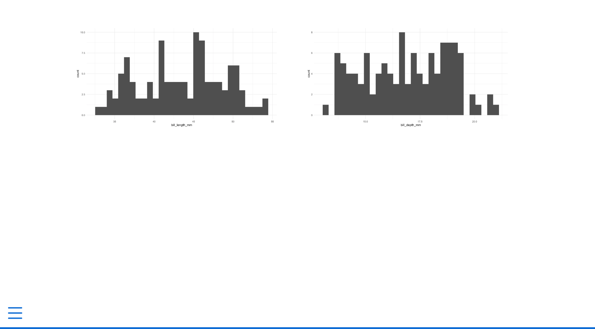
A slide with two columns
The code below is what I used to create the two-column slide. You’ll see the ::: as well as ::::. This creates nested divs. We first have a columns class, which tells the HTML that all content within the :::: should be laid out as columns. Then, we use ::: {.column width="50%"} to start a div that takes up half of the width of the slide. With both :::: and :::, we have to also have a matching closing :::: and ::: to indicate the end of the section.
With xaringan we were also able to easily center content on our slides by surrounding it with .center[]. Doing the same thing in Quarto is slightly more complicated. Quarto has no built-in CSS class to center content so we need to create it ourselves. I begin by creating a CSS code chunk and creating a custom class called center-slide. Using a bit of CSS, I tell it to center align all content (despite it saying text-align you’ll see that it also aligns images).
```{css}.center-slide {text-align: center;}```
I then apply the new center-slide class by putting it next to the title of the slide as follows.
## Bill Length {.center-slide}
With our custom CSS applied, the slide now has all of its content centered, as seen in Figure @ref(fig:quarto-slide-centered).
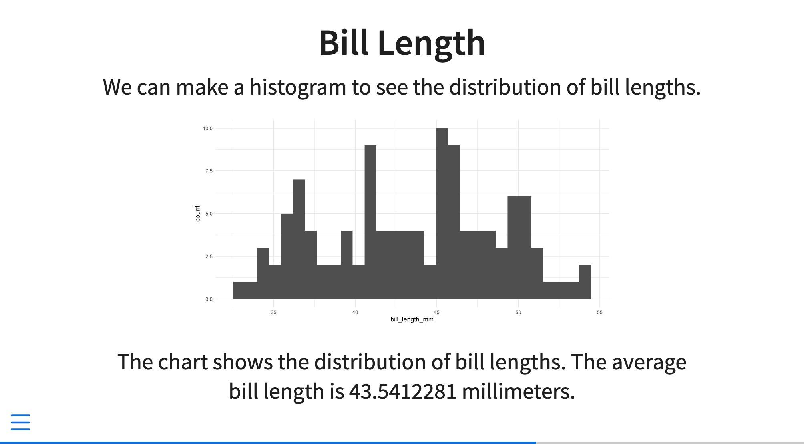
A slide with the content centered
Working in xaringan we added a background image to one of our slides. We can do the same thing in Quarto by applying the background-image attribute to a slide as follows.
## Penguins {background-image="penguins.jpg"}
This will add a slide with the text Penguins in front of an image of penguins, as seen in Figure @ref(fig:quarto-slide-background-image).
A slide with a background image
We’ve started making some changes to the look-and-feel of our Quarto slides. The sky is the limit in terms of further customizations. As with xaringan, there are two main ways to customize your slides:
Using existing themes
Changing the CSS
Themes are the easiest way to change what your slides look like. Quarto has many themes you can apply by adding their name to your YAML as follows:
Using this theme will change from the default light theme to a dark theme. The title slide with the dark theme applied can be seen in Figure @ref(fig:quarto-slide-dark).
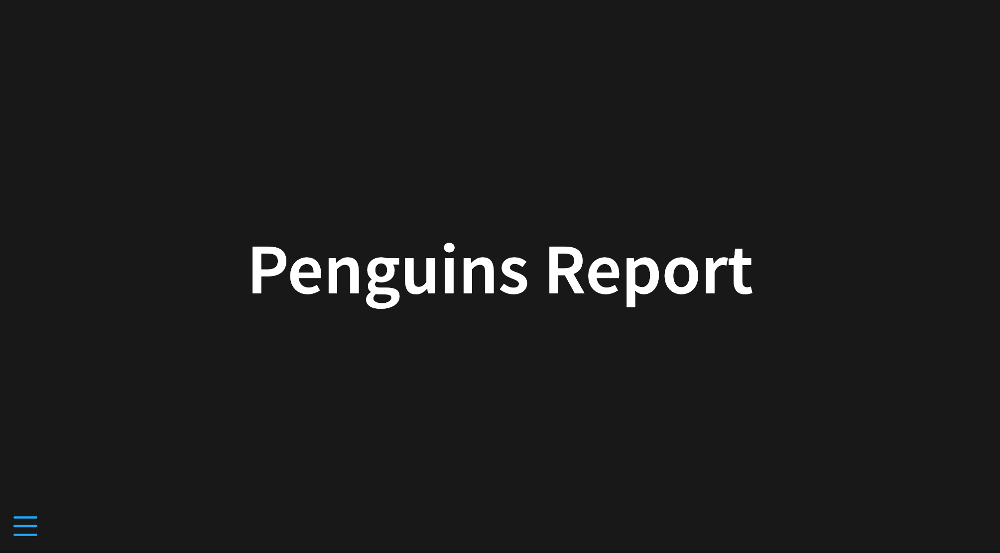
A slide with the dark theme applied
To see the full list of available themes, go to https://quarto.org/docs/presentations/revealjs/themes.html.
You can also write custom CSS to change your slides further. Quarto uses a type of CSS called Sass. The most important practical implication of using Sass is that we can use variables in our CSS. There are a number of variables that we can target to make changes to our slides. If you recall how the xaringanthemer package allowed us to target things like header_h2_font_size and header_color, using pre-existing variables with Sass will feel very similar.
To start, I’ll create a Sass file called theme.scss and add two sections to it as follows:
/*-- scss:defaults --*//*-- scss:rules --*/
In the scss:defaults section, we can use the Quarto Sass variables. For example, to change the color and size of first-level headers, I would add this code:
Figure @ref(fig:quarto-slide-scss) shows the changes applied to my rendered slides.
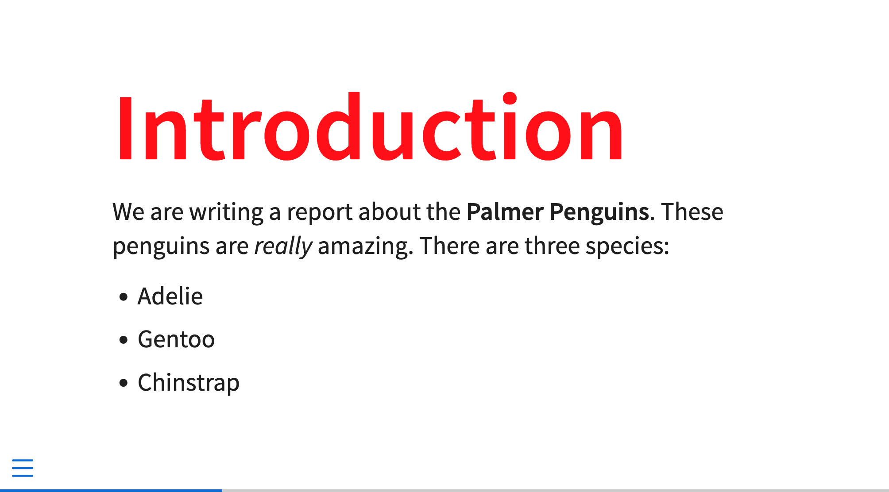
A slide with custom CSS applied to it
The scss:defaults section is for using available variables (the full list of variables is available at https://quarto.org/docs/presentations/revealjs/themes.html#sass-variables). The sass:rules section is where you would add additional tweaks that can’t be done by targeting variables. For example, I could take my code from above to center all of the content in a slide and add it to the scss:defaults section.
Because rendered Quarto slides are HTML documents, you can tweak them however you’d like with custom CSS. What’s more, because our slides use reveal.js under the hood, all of the features built into that Javascript library work in Quarto. There are easy ways to add transitions, animations, interactive content, and much more. The demo Quarto presentation, available at https://quarto.org/docs/presentations/revealjs/demo/, shows many of these features in action.
Websites
Quarto can also make websites. In the same way that we were able to make slides without an external package like xaringan, we can also make websites without an external package like distill. To create a Quarto website, go to File > New Project. Then select New Directory and you’ll be presented with the menu in Figure @ref(fig:new-project).
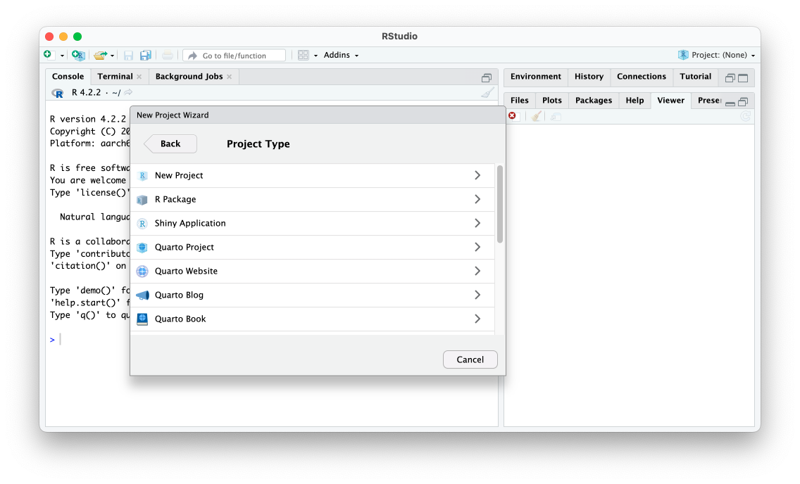
The RStudio new project menu
Select Quarto website and you’ll be prompted to choose a directory to place it in. Keep the default Engine (Knitr), check Create a git repository (this will only show up if you have already installed git) and leave everything else unchecked. Your screen should look like Figure @ref(fig:create-quarto-website).
The RStudio menu to create a Quarto website
Once you hit the Create Project button, you’ll see a series of files created. There is an index.qmd and about.qmd file as well as a _quarto.yml and styles.css file. These files should sound familiar if you read Chapter @ref(websites-chapter) on making websites with the distill package. The .qmd files are where we’ll add content; the _quarto.yml file is where we’ll set options for the website as a whole; and the styles.css file is where we’ll add CSS to customize the visual appearance of our website.
Building our Website
Let’s start with the .qmd files. Open index.qmd or about.qmd and you’ll see some default content. I’m going to delete the default content from the index.qmd and replace it with the content from website we made in Chapter @ref(websites-chapter). The only element I have removed is the layout = "l-page" that we used to make a wider layout for the map (we’ll discuss how to make different layouts in Quarto below).
```{r}# Load packageslibrary(tidyverse)library(janitor)library(tigris)library(gt)library(lubridate)library(reactable)``````{r}# Import dataus_states <-states(cb =TRUE, resolution ="20m",progress_bar =FALSE) %>%shift_geometry() %>%clean_names() %>%select(geoid, name) %>%rename(state = name) %>%filter(state %in% state.name)covid_data <-read_csv("https://raw.githubusercontent.com/nytimes/covid-19-data/master/rolling-averages/us-states.csv") %>%filter(state %in% state.name) %>%mutate(geoid =str_remove(geoid, "USA-")) most_recent_day <- covid_data %>%slice_max(order_by = date,n =1) %>%distinct(date) %>%mutate(date_nice_format =str_glue("{month(date, label = TRUE, abbr = FALSE)} {day(date)}, {year(date)}")) %>%pull(date_nice_format)```# COVID Death Rates as of `r most_recent_day`This table shows COVID death rates per 100,000 people in four states states.```{r}# Make tablecovid_data %>%slice_max(order_by = date,n =1) %>%select(state, deaths_avg_per_100k) %>%arrange(state) %>%set_names("State", "Death rate") %>%reactable()```We can see this same death rate data for all states on a map.```{r}# Make mapmost_recent <- us_states %>%left_join(covid_data, by ="state") %>%slice_max(order_by = date,n =1) most_recent %>%ggplot(aes(fill = deaths_avg_per_100k)) +geom_sf() +scale_fill_viridis_c(option ="rocket") +labs(fill ="Deaths per\n100,000 people") +theme_void()```# COVID Death Rates Over TimeThe following chart shows COVID death rates from the start of COVID in early 2020 until `r most_recent_day`.```{r}# Make chartlibrary(plotly)covid_chart <- covid_data %>%filter(state %in%c("Alabama","Alaska","Arizona","Arkansas")) %>%ggplot(aes(x = date,y = deaths_avg_per_100k,group = state,fill = deaths_avg_per_100k)) +geom_col() +scale_fill_viridis_c(option ="rocket") +theme_minimal() +labs(title ="Deaths per 100,000 people over time") +theme(legend.position ="none",plot.title.position ="plot",plot.title =element_text(face ="bold"),panel.grid.minor =element_blank(),axis.title =element_blank()) +facet_wrap(~state,nrow =2)ggplotly(covid_chart)```
At this point, I could render the index.qmd file individually, but I know I want to render the entire website so let’s do that. You can build a Quarto website just as you did a distill website. Look for the Build tab in the top right of RStudio and click the button that says Render Website. Figure @ref(fig:render-website-button) shows what you should see.
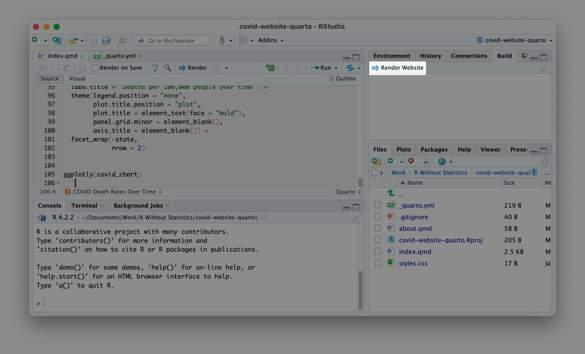
The render website button
The rendered website should now appear in the Viewer pane on the bottom right panel of RStudio. If you go to the Files pane on the same panel you will also see that a _site folder has been created. If you go into this folder you will see all of the content in your rendered site. I’ll open the index.html file in my web browser. You can see the website in Figure @ref(fig:covid-website-messages).
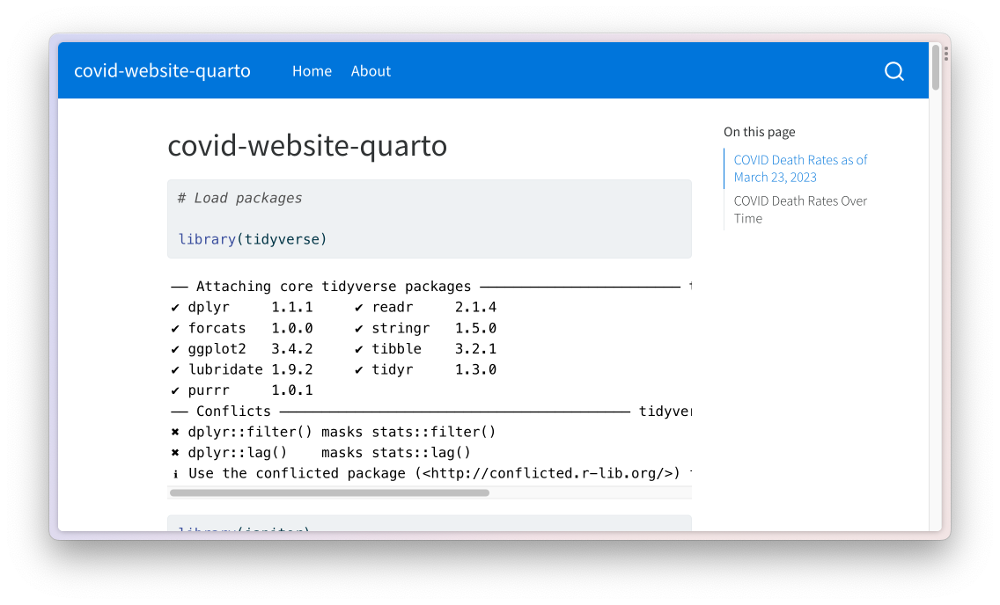
The Quarto website with warnings and messages
As you can see, there are a lot of warnings and messages that we don’t want to show. In R Markdown we removed these in our setup code chunk, but with Quarto we do it in the YAML. I could add this code to the index.qmd YAML, as we did when making a presentation, to remove all code, warnings, and messages from the output:
However, doing this will only make changes to that one file. Instead, we want to add them to the _quarto.yml file.
Using the _quarto.yml file to Set Options for the Website
With distill we used the _site.yml file to make changes to all files in our website. In With Quarto, we use the _quarto.yml file for the same purpose. If you open the _quarto.yml file, you should see three sections:
The top sets the project type (in this case, a website).
The middle section is where we set the title of the website as a whole and determine the options for our navigation bar.
Let’s start from the bottom. To remove code, warnings, and messages for all pages in our website, add the portion of the YAML we created above to the _quarto.yml file. The bottom section should now look like this:
If I now build the website again, I will see it, as in Figure @ref(fig:covid-website-no-messages), with just the content I want to show.
The website with warnings and messages removed
You can add any additional options that you would add to a single .qmd file to this section of the _quarto.yml file and it will apply them across all pages of your website.
The other parts of the bottom section of the _quarto.yml file deal with the appearance of rendered files. The line theme: cosmo tells Quarto use the cosmo theme (the default when making websites). There are many themes available (the full list is available at https://quarto.org/docs/output-formats/html-themes.html) and I can choose a different one to show how it changes the output.
format:html:theme: mintycss: styles.csstoc:true
Using the minty theme results in changes to the colors and fonts on the website, as seen in Figure @ref(fig:covid-website-minty).
The website with the minty theme
In addition to using pre-built themes, you can also customize your website with CSS. The css: styles.css section in the _quarto.yml file indicates that Quarto will use any CSS in the styles.css file when rendering. For example, I can add this to the styles.css to make first-level headers red and 50 pixels.
h1 {color: red;font-size: 50px;}
The re-rendered index.html, seen in Figure @ref(fig:covid-website-custom-css), shows the large red headings.
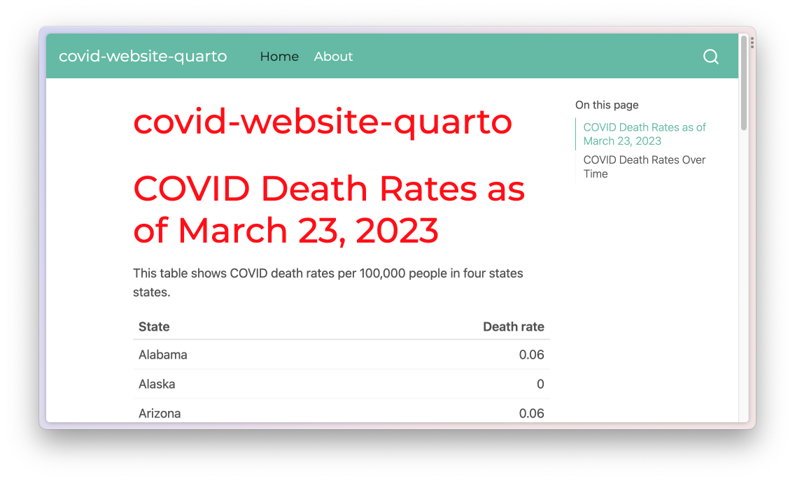
The website with custom CSS applied
An alternative approach to customizing your website is to use Sass variables. The process for using Sass variables in a .scss file is identical to that laid out above. For example, I can create a file called styles.scss and add a line like this to change the body background to be a light gray color.
/*-- scss:defaults --*/$body-bg: #eeeeee;
To get Quarto to use this styles.scss file, I adjust the theme line as follows.
The syntax theme: [minty, styles.scss] tells Quarto to use the minty theme and then make any additional tweaks based on the styles.scss file. If I render my website again, I can see the light gray background throughout. Figure @ref(fig:quarto-website-scss) shows the current version.
The website with custom CSS applied through styles.scss
Note that when you add a .SCSS file, the tweaks made in your CSS file are no longer applied. If you wanted to use those, you’d need to add them to the styles.scss file.
The line toc: true creates a table of contents on the side of rendered HTML files that you can see in the screenshots above. You can remove it by changing true to false, as seen in Figure @ref(fig:quarto-website-no-toc) below.
The website without the table of contents on pages
This section of the _quarto.yml file is where you would add any additional options, such as figure height.
The middle section of the _quarto.yml file deals with the title of the website as a whole as well as its navigation. I can change the title by adjusting that line. The navbar section functions nearly identically to how it did in Chapter @ref(websites-chapter) when working with distill. The href is where you list the file you want to link to. The optional text line is where you manually specify the text that should show up for that link. Here are a couple changes to the default _quarto.yml to change the website title and the text for the About page link.
website:title:"Quarto COVID Website"navbar:left:-href: index.qmdtext: Home-href: about.qmdtext: About this Website
Figure @ref(fig:quarto-website-navbar-changes) shows these changes applied to the website.
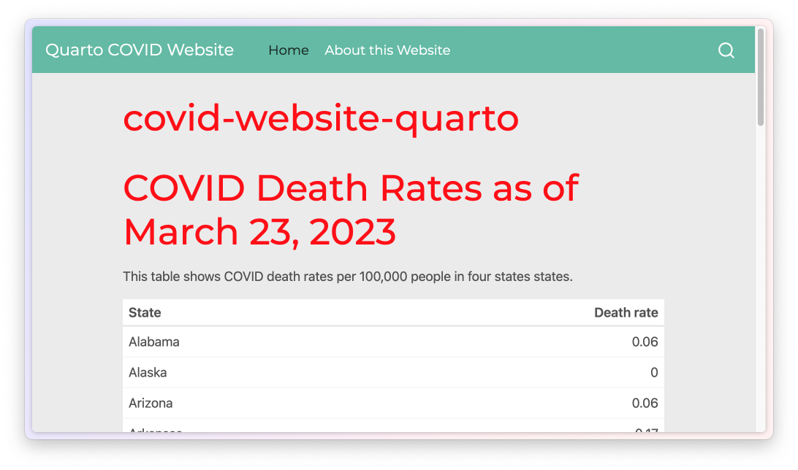
The website with chnages to the navigation bar
The title on the home page is still covid-website-quarto, but you could change that in the index.qmd file.
Finally, we come to the top section of the _quarto.yml. This is the most straightforward. The line type: website indicates that the current project is a website (other project types include books, wikis, and more).
Layouts
When we made our website with distill we used layout = "l-page" to make the map wider. We can accomplish the same thing with Quarto, though the syntax is slightly different. With Quarto, you can adjust the width of the output using the ::: syntax we saw above to add HTML <div> tags. To make the map larger on our Quarto website, we add :::{.column-screen-inset} at the beginning and ::: at the end of the code block that makes it.
Figure @ref(fig:quarto-website-wide-section) shows the wider map.
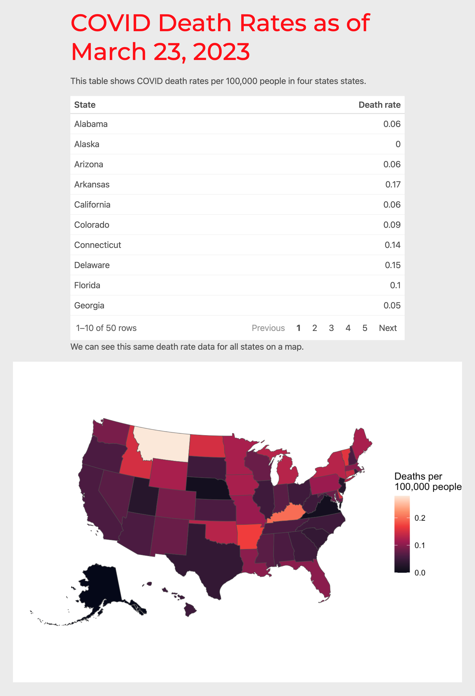
The website with a wider section
You may have noticed that I also added the line #| out-width: 100% in the code chunk. This is because we need to specify that the map should take up all of the available width. Without this line, the map would only take up a portion of the available width. There are a number of different output widths you can use (the full list is available at https://quarto.org/docs/authoring/article-layout.html).
Hosting Your Quarto Website
After we finished making our distill website in Chapter @ref(websites-chapter), we discussed hosting it using GitHub Pages. You can do the same thing with a Quarto website. Recall that GitHub Pages requires you to publish your website based on the files in the root of your repository or in the docs folder. I’ll do the latter by changing my _quarto.yml file so that the site outputs in the docs folder. To do this, I add a line to the top section of the _quarto.yml file.
project:type: websiteoutput-dir: docs
Now, when I render my site, the HTML and other files show up in the docs directory. At this point, I can push my repository to GitHub, adjust the GitHub Pages settings as I did in Chapter @ref(websites-chapter) and I will be given a URL where my Quarto website will live.
In addition to using GitHub Pages, Quarto has a free service called Quarto Pub that makes it straightforward to get your materials online. Especially if you are not a GitHub user, this is a great option to publish your work. To show you how Quarto Pub works, let me publish the website we just made to it. To get started, look for the Terminal tab on the bottom left panel of RStudio. Click it and at the prompt enter the text quarto publish and hit enter. Doing so will bring up a list of ways you can publish your website. See Figure @ref(fig:quarto-publish) below.
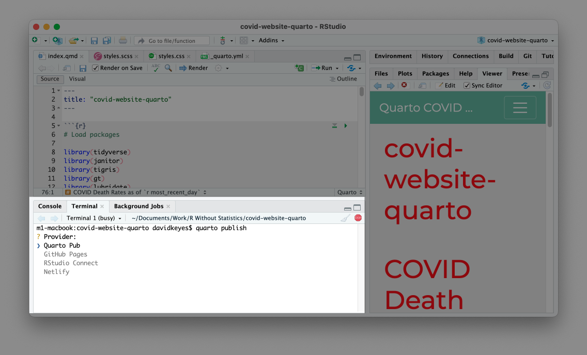
The list of providers to publish your Quarto website
Press enter to select Quarto Pub. You’ll then be asked to authorize. Type Y to do so, which will take you to quartopub.com. Sign up for an account (or sign in if you already have one). You should see a screen like Figure @ref(fig:quarto-pub-authorize), indicating that you have successfully signed in and authorized RStudio to connect with Quarto Pub.
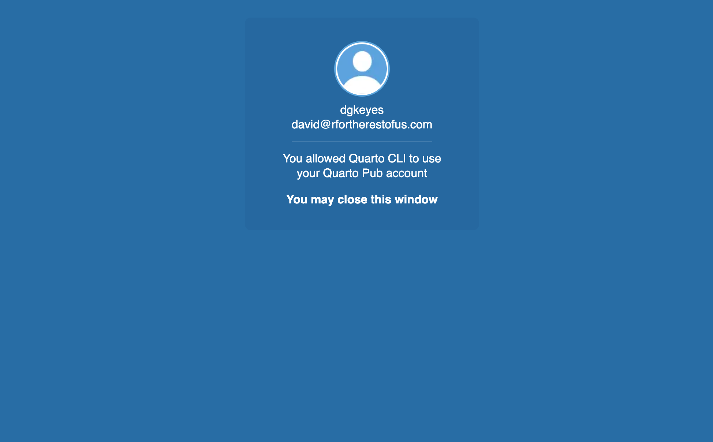
The confirmation screen from Quarto Pub
From there, you can return to RStudio. You’ll be prompted to select a name for your website on Quarto Pub. The easiest thing is to select the same name as your project (in my case, that’s quarto-website-covid). Enter the name and hit enter. The site will then be published and you will be taken to the site, as seen in Figure @ref(fig:quarto-pub-website).
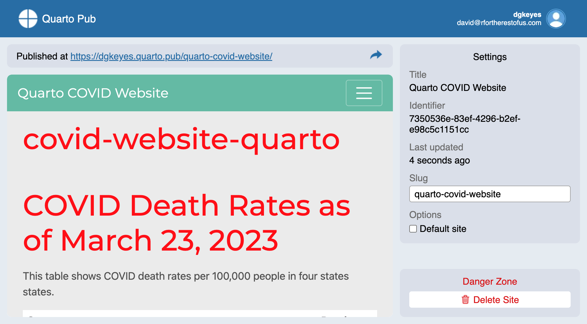
The website published on Quarto Pub
When you make updates to your site, you can republish to Quarto Pub using the same steps. Quarto Pub is probably the easiest way to publish your HTML files made with Quarto.
Conclusion: Should You Use R Markdown or Quarto?
As you’ve seen throughout this chapter, we can do everything we did with R Markdown in Quarto as well. And, unlike R Markdown, we didn’t need to load any external packages to make different outputs. What’s more, the syntax between different output formats is more consistent. For example, because you can make new slides in Quarto by adding first- or second-level headers, the Quarto documents you make to create reports should translate much more easily to presentations.
You’re probably wondering at this point whether you should use R Markdown or Quarto. It’s a big question, and one many in the R community are thinking about.
The first thing to know is that R Markdown is not going away. If you already use R Markdown, you don’t need to switch. As of the writing of this book, I still use R Markdown for most of my work. If you have developed a workflow that uses R Markdown, by all means stick with it.
If you are new to R and have never used R Markdown or Quarto, you may be a good candidate to start with Quarto. The developers of R Markdown have promised to continue its development, but have also said that features they develop for Quarto in the future may not be backported to R Markdown. So, if you’re starting from scratch, start with Quarto.
My strongest recommendation, though, is to use either R Markdown or Quarto. As you’ve seen throughout this chapter, the differences between R Markdown and Quarto are relatively small and the impact on your workflow of switching should be minor. The major impact will come if you switch from a multi-tool workflow to a single tool workflow. Both R Markdown and Quarto can help you become more efficient, avoid manual errors, and share results in a wide variety of formats.